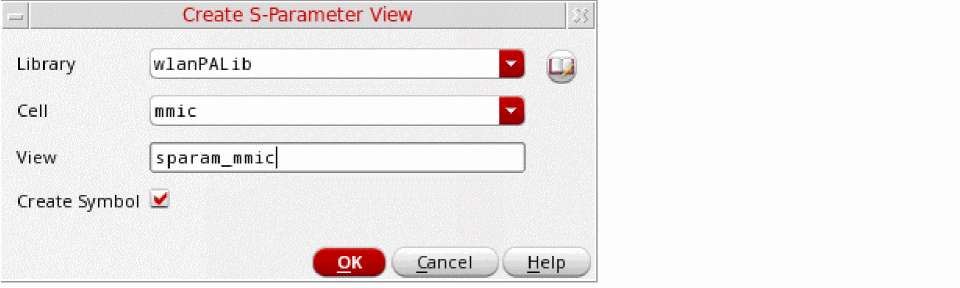

Creating S-Parameter Cellviews for Models
In addition to saving S-Parameters as extracted views, you can save them as S-parameter cellviews along with their symbols that can be instantiated in a schematic cellview.
To save a model as an S-parameter cellview:
-
After the simulation for the model is complete, refresh its status.
The value in the Status column for the model is shown as done. -
Right-click the row for the model and choose Export to S-Parameter View.
The Create S-Parameter View form is displayed with a default name to be used for the new S-parameter view to be saved in the current library and cell. However, you can customize the Library, Cell, and View names.
 - (Optional) Click the button to the right of the Library drop-down list to open the Library Browser form and choose another library or cell.
- (Optional) Change the name of the view.
-
Click OK.
A new S-parameter view and a symbol view is saved in the specified library and cell.
Related Topics
Return to top